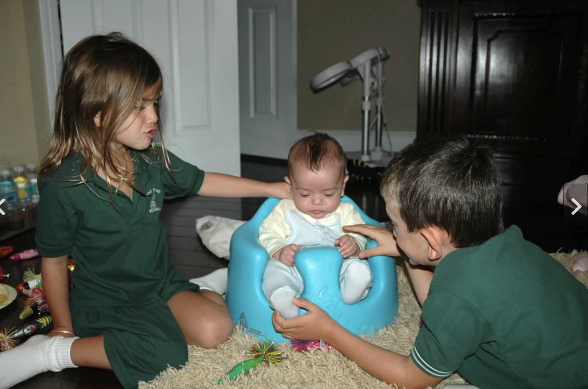
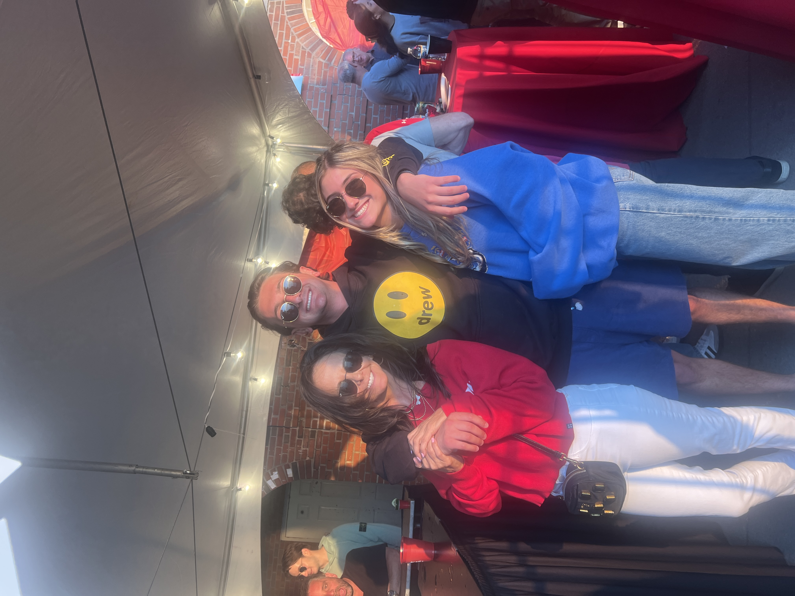

Roots
I was born and raised in Boca Raton, Florida, with my two brothers—Kobe and Luke—and my grandparents close by. Being
the middle child pushed me to find my own path while still learning from both sides. Growing up, I played tennis and also
discovered a love for fashion, which led me to work at Jessie Boutique, a local clothing store that gave me my first real
experience in retail.

Interests
Outside of school and work, I love staying active—whether it’s working out or going on walks with friends. I’m always up
for cooking and trying new foods, and I spend as much time as I can with my friends and family. Music is also a big part of
my life, from discovering new artists to having playlists for every mood.

Goals
After graduation, I hope to start my career in marketing and consumer insights, using creativity and strategy to help brands
connect with people. I aim to grow into a successful career in fashion and beauty marketing, continue learning about digital
strategy and consumer behavior, and explore entrepreneurial opportunities in the future—all while staying balanced with
family, friends, and personal passions.